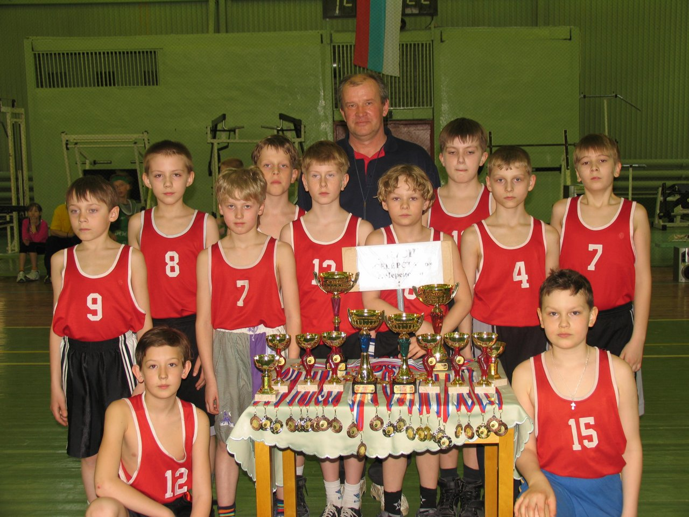
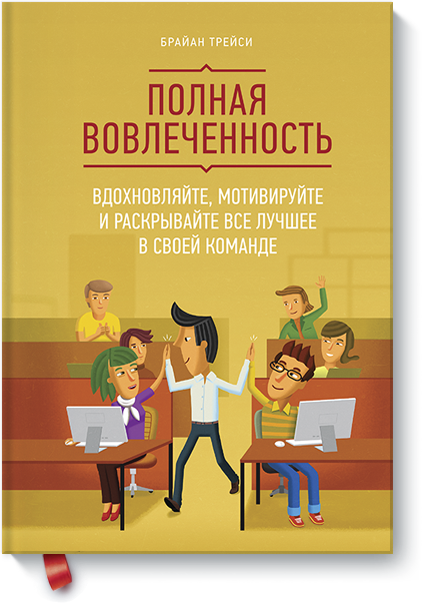

Увлечения

С детства я увлекаюсь баскетболом.
В 2001 году меня записали в детско-юношескую спортивную школу №3 на секцию по баскетболу. В которую я проходил 6 лет, выезжая на межобластные соревнования и принимая участие юношеских турнирах.
C возрастом расширялся список моих увлечений. Большой интерес у меня начали вызывали компьютеры и компьютерные игры, в частности. В 2005 году у меня появился первый компьютер, что крупно изменило мою жизнь.

В колледже я начал больше читать. Я предпочитаю Романы, но также уделяю внимание книгам, способствующим личностному росту. Одной из последних книг, что я прочитал, является "Полная вовлечённость" - Брайана Трейси. В ней автор рассказывает об эффективном менеджменте человеческими ресурсами.